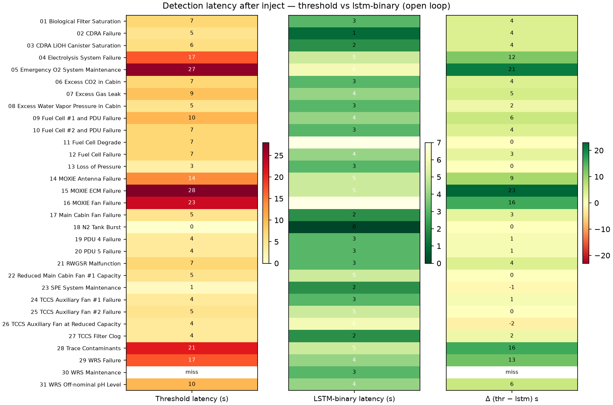

Open loop · inject 80 s · recover 180 s · latency = first positive observation after inject · green Δ = LSTM faster
Threshold 30 / 31 · LSTM 31 / 31 (miss: WRS Maintenance)
Threshold 7 s · LSTM 3 s · LSTM faster on 24 scenarios
Mean TPR 0.88 → 0.96 · both FPR = 0 in [60, inject)